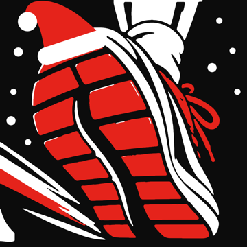
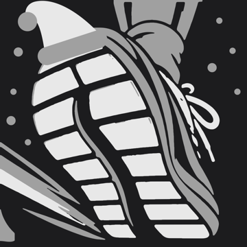

Anteprima ferma della specifica ios/docs/design/T-004-natale.md: neve, luci sulla strada, cappello sul pomello e sulla fiamma, icona di Natale. Telai 390 × 844 ridotti a 0,62. Le lampadine lampeggiano come nell'app (ferme con «Riduci movimento»); la neve qui è ferma.

